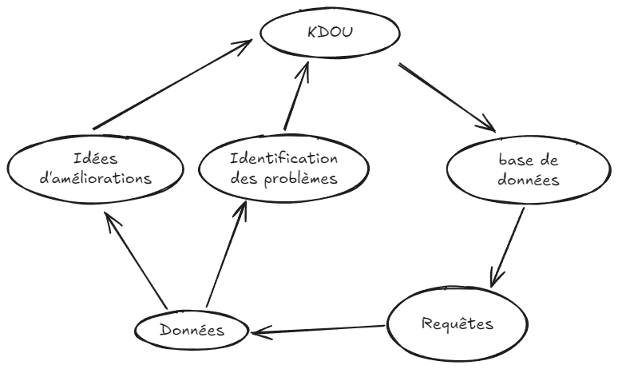

Mission 3 : Analyser les données de Kdou avec le langage SQL :
Contexte :
Avec les deux missions d'avant, nous avons appris que lorsque les données de Kdou sont situées dans une base de donnée, on peut faire des requêtes pour y accéder, tout en posant des conditions sur ces dernières. Mais il s'agit maintenant de déterminer quelles requêtes faire? Quelles seraient les données qui seraient importante à Kdou d'obtenir afin de pouvoir évoluer? Nous verrons ici quelques requêtes (ou indicateurs) qui permetrtaient à Kdou de repérer ses erreurs ou de trouver des idées d'améliorations afin d'évoluer.
Thème 1 : Les boissons et dessert
KDou s’intéresse aux desserts et aux boissons dans sa réflexion en lien avec la santé :
1er indicateur :
Enoncé
On va chercher les pays de provenance des desserts ou boissons vendus à plus de 50 euros.
Construction :
On va lier les tables Catégorie, Fournisseurs et Produits en ne sélectionnant que les produits étant des desserts ou des boissons ET ayant un prix supérieur à 50. Puis on va afficher le nom de ces produits, leur prix, leur pays et leur catégorie.
SQL :
SELECT Produit.NomProd, Produit.PrixUnit, Fournisseur.Pays, Categorie.NomCateg
FROM Categorie
INNER JOIN (Fournisseur INNER JOIN Produit ON Fournisseur.NoFour = Produit.NoFour) ON Categorie.CodeCateg = Produit.CodeCateg
WHERE (((Produit.PrixUnit)>=50) AND ((Categorie.NomCateg)="boissons" Or (Categorie.NomCateg) Like "desserts"));
Résultat :
| NomProd | PrixUnit | Pays | NomCateg |
|---|---|---|---|
| Sir Rodney's Marmalade | 107.42€ | Royaume-Uni | Boissons |
| Steeleye Stout | 67.50€ | Royaume-Uni | Desserts |
| Côte de Blaye | 215.00€ | Etats-Unis | Boissons |
| Rhönbräu Klosterbier | 219.58€ | France | Boissons |
| Bratislava Vodka | 86.46€ | Allemagne | Boissons |
| Pimm's jojo | 320.00€ | Royaume-Uni | Boissons |
| Jus Kiwina | 55.83€ | Australia | Boissons |
| Jus Kiwina | 52.00€ | Royaume-Uni | Boissons |
2ème indicateur :
Enoncé :
On va calculer le total du prix unitaire des produits vendus pour chaque catégorie. Cela permet de voir la contribution financière de chaque catégorie de produit.
Construction :
On va lier les tables Produit et Categorie pour afficher la somme des produits regroupés par catégories.
SQL :
SELECT Categorie.NomCateg, Sum(Produit.PrixUnit) AS SommeDePrixUnit
FROM Categorie
INNER JOIN Produit
ON Categorie.CodeCateg = Produit.CodeCateg
GROUP BY Categorie.NomCateg;
Résultat :
| NomCateg | SommeDePrixUnit |
|---|---|
| Boissons | 1889.41€ |
| Condiments | 266.91€ |
| Desserts | 361.47€ |
| Pâtes et céréales | 176.78€ |
| Poissons et fruits de mer | 382.83€ |
| Produits Laitiers | 251.28€ |
| Produits secs | 134.88€ |
| Viandes | 326.03€ |
Thème 2 : L'offre de KDou
KDou se demande ce qu'il faut changer dans son offre
1er indicateur :
Enoncé :
On veux la liste des fournisseurs qui ont des produits pas encore commandés par un client. Cela permet d'identifier des produits ou des fournisseurs qui pourraient bénéficier de plus d'attention ou être supprimés.
Construction :
On va associer les produits à leur(s) numéro(s) de commande(s), et on va afficher seulement ceux qui en ont un NULL, c'est-à-dire qui n'ont aucune commande associée.
SQL :
SELECT Fournisseur.Societe, Produit.NomProd
FROM (Fournisseur INNER JOIN Produit ON Fournisseur.NoFour = Produit.NoFour) LEFT JOIN DetailCommande ON Produit.RefProd = DetailCommande.RefProd
WHERE DetailCommande.NoCom IS NULL;
Résultat (extrait) :
| Societe | NomProd |
|---|---|
| Exotic Liquids | Limonadystel |
| Forêts d'érables | Sugar bleu blanc |
| Exotic Liquids | Bratislava Vodka |
| Exotic Liquids | Beer native |
| Exotic Liquids | linonade ctinonella |
| Exotic Liquids | Cidre brut de saint Lô |
| Exotic Liquids | Rhum martini Cubano |
| Exotic Liquids | Calvanelle |
| G'day, Mate | Pimm' s jojo |
| Perdigão | Cachaça |
| G'day, Mate | Victoria Bitter |
| Exotic Liquids | Limon Lux |
| Exotic Liquids | Blue Wine |
| Perdigão | Guaraná em pô |
| Forêts d'érables | Jus d'érable d'or |
| Westpac Corporation | Arnott's Tim Tam Biscuits |
| Exotic Liquids | CocaChina |
| New Orleans Cajun Delights | Louisiana Coca |
| Exotic Liquids | LimoCoca |
| Faro Madeiras | Cachaça zuaviocado |
2ème indicateur :
Enoncé :
On veut le nombre de produits non-commandés regroupés par catégories
Construction :
On va lier les produits avec leur(s) numéro(s) de commande(s) (ou NULL comme vu au-dessus), et on va faire une jointure entre ces derniers et Catégorie pour les regrouper par leurs catégories et afficher leur nombre.
SQL :
SELECT Categorie.NomCateg, COUNT(Produit.RefProd) AS NombreProduitsNonCommandes
FROM (Categorie
INNER JOIN Produit ON Categorie.CodeCateg = Produit.CodeCateg)
LEFT JOIN DetailCommande ON Produit.RefProd = DetailCommande.RefProd
WHERE DetailCommande.RefProd IS NULL
GROUP BY Categorie.NomCateg;
Résultat :
| NomCateg | NombreProduitsNonCommandes |
|---|---|
| Boissons | 27 |
| Condiments | 2 |
| Desserts | 3 |
| Pâtes et céréales | 2 |
| Poissons et fruits de mer | 2 |
Thème 3 : La provenance des produits
KDou veut étudier la provenance de ses produits
1er indicateur :
Enoncé :
On veut la liste des fournisseurs qui fournissent uniquement des desserts ou des boissons. Cela permet de connaitre les fournisseurs spécialisés en desserts ou en boissons.
Construction :
On va afficher seulement les fournisseurs qui ont des produits boissons ou desserts ET qui n'ont aucun produit venant d'une autre catégorie.
SQL :
SELECT DISTINCT f.Societe
FROM Fournisseur AS f INNER JOIN (Produit AS p INNER JOIN Categorie AS c ON c.CodeCateg = p.CodeCateg) ON f.NoFour = p.NoFour
WHERE c.NomCateg IN ("Boissons", "Desserts")
AND f.NoFour NOT IN
(SELECT p.NoFour
FROM Produit p
INNER JOIN Categorie c
ON p.CodeCateg = c.CodeCateg
WHERE c.NomCateg NOT IN ("Boissons", "Desserts"));
Résultat (extrait) :
| Societe |
|---|
| Aux joyeux ecclésiastiques |
| Faro Madeiras |
| Globalis |
| Heli Süßwaren GmbH & Co. KG |
| Karkki Oy |
| Losad |
| Perdigão |
| Refrescos Americanas LTDA |
| Specialty Biscuits, Ltd. |
| Westpac Corporation |
| Zaanse Snoepfabriek |
2ème indicateur :
Enoncé :
On veut les fournisseurs qui ne vendent des desserts et des boissons.
Construction :
On prend les fourisseurs qui ont des produits a la fois dans la catégorie desserts ET dans la catégorie boissons.
SQL :
SELECT DISTINCT f.Societe
FROM Fournisseur AS f INNER JOIN (Categorie AS c INNER JOIN Produit AS p ON c.CodeCateg = p.CodeCateg) ON f.NoFour = p.NoFour
WHERE c.NomCateg IN ("Boissons","Desserts");
Résultat :
| Societe |
|---|
| Aux joyeux ecclésiastiques |
| Bigfoot Breweries |
| Exotic Liquids |
| Faro Madeiras |
| Forêts d'érables |
| G'day, Mate |
| Globalis |
| Heli Süßwaren GmbH & Co. KG |
| Karkki Oy |
| Leka Trading |
| Losad |
| New Orleans Cajun Delights |
| Pavlova, Ltd. |
| PB Knäckebröd AB |
| Perdigão |
| Plusspar Lebensmittelgroßmärkte AG |
| Refrescos Americanas LTDA |
| Specialty Biscuits, Ltd. |
| Westpac Corporation |
| Zaanse Snoepfabriek |
Thème 4 : La clientèle
KDou veut étudier son type de clientèle
1er indicateur :
Enoncé :
Un client nantais Le verre à soi souhaite savoir quels autres clients nantais commandent aussi des produits en Allemagne pour envisager de futures livraisons groupées.
Construction :
On va afficher les clients qui viennent de Nantes qui ont des commandes pour des fournisseurs allemands.
SQL :
SELECT DISTINCT cl.CodeCli, cl.SocieteCli, cl.VilleCli, f.Pays
FROM ((Client AS cl INNER JOIN Commande AS co ON cl.CodeCli = co.CodeCli) INNER JOIN DetailCommande AS dc ON co.NoCom = dc.NoCom) INNER JOIN (Produit AS p INNER JOIN Fournisseur AS f ON p.NoFour = f.NoFour) ON dc.RefProd = p.RefProd
WHERE cl.VilleCli = 'Nantes'
AND f.Pays = 'Allemagne';
Résultat (extrait) :
| CodeCli | SocieteCli | VilleCli | Pays |
|---|---|---|---|
| COMMI | Pedro's house | Nantes | Allemagne |
| DRACD | Table nantaise | Nantes | Allemagne |
| FURIB | Verre à soi | Nantes | Allemagne |
2ème indicateur :
Enoncé :
Certains clients n’ont jamais eu la remise la plus importante de 25%. Qui sont-ils ?
Construction :
On prend les clients n'ayant jamais eu de commande avec une remise de plus de 25%.
SQL :
FROM Client AS cli
WHERE cli.CodeCli NOT IN (
SELECT DISTINCT com.CodeCli
FROM (Commande AS com INNER JOIN DetailCommande AS dc ON com.NoCom = dc.NoCom)
WHERE dc.Remise = 0.25);
Résultat :
| CodeCli | SocieteCli | Pays |
|---|---|---|
| ALYAD | Chez Bouxou | France |
| MAKOU | Le marikou | France |
| MORJU | Les Morainières | France |
Indicateur 1
On souhaite expédier les commandes des clients, tout en respectant l’environnement et en optimisant son offre. Donc nous allons valoriser les clients qui ont acheté en grande quantité pour optimiser les frais de transport, réduire la pollution et éviter les livraisons séparées. Cela permet aussi aux clients d’acheter les produits à une meilleure offre.
Enoncé :
Ma requête consiste à connaître les numéros de commandes des clients ayant acheté une grande quantité de produits avec un seuil minimum de 10, puis de classer les commandes à envoyer, du délai de commande du plus court au plus long, afin de respecter le délai.
Construction :
On affiche les commandes qui ont seulement une quantité plus élevée que 10, ainsi que leur temps de transport.
SQL :
SELECT Commande.NoCom, DetailCommande.QteCom, Commande.DateEnvoi, Commande.ALivrerAvant
FROM Commande
INNER JOIN DetailCommande ON Commande.NoCom = DetailCommande.NoCom
WHERE (((DetailCommande.QteCom)>=10) AND ((Commande.ALivrerAvant) Is Null))
ORDER BY DetailCommande.QteCom DESC , Commande.DateEnvoi;
Résultat (extrait) :
| NoCom | QteCom | DateEnvoi | ALivrerAvant |
|---|---|---|---|
| 11068 | 36 | 12/07/2020 | 12/07/2020 |
| 11059 | 35 | 21/07/2020 | 21/07/2020 |
| 11059 | 30 | 21/07/2020 | 21/07/2020 |
| 11068 | 28 | 12/07/2020 | 12/07/2020 |
| 11077 | 24 | 14/07/2020 | 14/07/2020 |
| 11040 | 20 | 30/06/2020 | 30/06/2020 |
| 11061 | 15 | 22/07/2020 | 22/07/2020 |
| 11059 | 12 | 21/07/2020 | 21/07/2020 |
Indicateur 2
On souhaite permettre à KDOU de mieux gérer son offre c'est-à-dire de l’adapter à la quantité de commandes passée en fonction des catégories.
Enoncé :
Cette requête affiche le nombre de commandes passées selon chaque catégorie ce qui permet d’avoir une vue d’ensemble de la performance de chaque catégorie de produit.
Construction :
On fait la somme des commandes par produit en les groupant.
SQL :
SELECT Categorie.NomCateg AS CategoryName,
SUM(DetailCommande.QteCom) AS TotalQuantitySold
FROM (Categorie INNER JOIN Produit ON Categorie.CodeCateg = Produit.CodeCateg)
INNER JOIN DetailCommande ON Produit.RefProd = DetailCommande.RefProd
GROUP BY Categorie.NomCateg;
Résultat (extrait) :
| CategoryName | TotalQuantitySold |
|---|---|
| Boissons | 12980 |
| Condiments | 6448 |
| Desserts | 9866 |
| Pâtes et céréales | 5838 |
| Poissons et fruits de mer | 10332 |
| Produits laitiers | 11714 |
| Produits secs | 3531 |
| Viandes | 5679 |
Indicateur 3
On veut connaitre les meilleurs fournisseurs de KDou
Enoncé :
Cette requête exprime le top 5 des fournisseurs avec le plus de produits:
Construction :
On classe les fournisseurs par la somme de leurs produits et on affiche seulement le top 5
SQL :
SELECT TOP 5 Fournisseur.Societe, COUNT(Produit.RefProd) AS NombreDeProduits
FROM Fournisseur
INNER JOIN Produit ON Fournisseur.NoFour = Produit.NoFour
GROUP BY Fournisseur.Societe
ORDER BY COUNT(Produit.RefProd) DESC, Fournisseur.Societe;
Résultat :
| Societe | NombreDeProduits |
|---|---|
| Exotic Liquids | 18 |
| Plusspar Lebensmittelgroßmärkte AG | 6 |
| G'day, Mate | 5 |
| Bigfoot Breweries | 4 |
| Forêts d'érables | 4 |
Indicateur 4
On veut se renseigner sur les livraisons.
Enoncé :
Cette requete affiche les livraisons qui doivent etre faites dans une meme ville et dans une meme semaine.
Construction :
On affiche la commande et le client qui y correspond des commandes étant situées dans la même semaine choisie.
SQL :
SELECT Cm.NoCom, Cl.VilleCli, Cl.Pays, Cm.ALivrerAvant
FROM Commande AS Cm
INNER JOIN Client AS Cl ON Cm.CodeCli = Cl.CodeCli
WHERE Cm.ALivrerAvant BETWEEN #2021-06-10# AND #2021-06-17#;
Résultat :
| NoCom | VilleCli | Pays | ALivrerAvant |
|---|---|---|---|
| 10495 | Caen | France | 11/06/2023 |
| 10493 | Lille | France | 10/06/2023 |
| 11007 | Lille | France | 16/06/2023 |
| 10499 | Lille | France | 16/06/2023 |
| 10999 | Locmariaquer | France | 11/06/2023 |
| 10174 | Lyon | France | 11/06/2023 |
| 11004 | Marseille | France | 15/06/2023 |
| 10497 | Marseille | France | 12/06/2023 |
| 11008 | Nantes | France | 15/06/2023 |
| 11005 | Nantes | France | 17/06/2023 |
| 10501 | Nantes | France | 17/06/2023 |
| 10500 | Paris | France | 17/06/2023 |
| 10976 | Paris | France | 16/06/2023 |
| 11013 | Paris | France | 17/06/2023 |
| 11011 | Paris | France | 17/06/2023 |